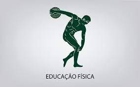
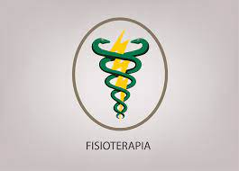

<div id="tab4">
  <h2> Atleta </h2>

  <div class="curso1">
    
    <a target="_blank" href="https://querobolsa.com.br/cursos-e-faculdades/educacao-fisica"> Bacharelado em Educação Física </a>
    <p><b> Duração:</b> 4 anos.</p>
  </div>

  <div class="curso2">
    
    <a target="_blank" href="https://querobolsa.com.br/cursos-e-faculdades/nutricao"> Bacharelado em nutrição </a>
    <p><b> Duração:</b> em média, 4 anos.</p>
  </div>

  <div class="curso3">
    
    <a target="_blank" href="https://querobolsa.com.br/cursos-e-faculdades/fisioterapia/bolsas"> Bacharelado em Fisioterapia </a>
    <p><b> Duração:</b> em média, 5 anos.</p>
  </div>

</div>

    